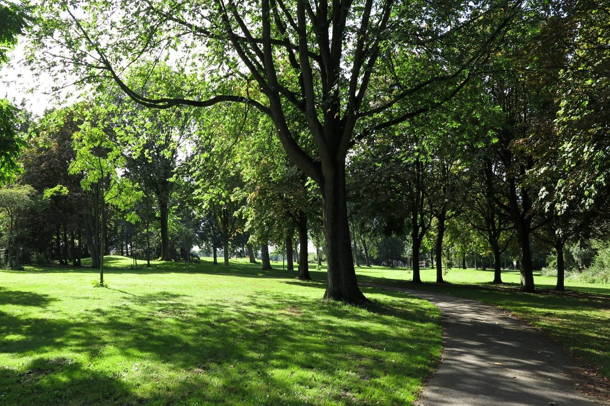

Molenwijk - A Charming Neighborhood for Dog Lovers
Molenwijk is a charming residential neighborhood that surprises visitors with its hidden green paths and peaceful parks, making it a wonderful place for dog owners to explore. While the area may seem urban at first glance, it offers several secret walking routes and serene green spaces that are perfect for relaxed strolls with your dog.
Whether you’re looking for a short walk or a longer exploration, Molenwijk provides a balance of residential charm and natural beauty that both you and your dog will appreciate.

Tree-Lined Paths
, uninterrupted walks. The neighborhood features quiet, tree-lined paths that offer plenty of shade and space for you and your dog to enjoy a leisurely walk without the noise and distractions of busier areas. Small parks are scattered throughout, providing perfect spots for quick play sessions or a moment to let your dog run off-leash in a safe environment.
Historic Windmill

Imagine peaceful, tree-lined streets where the sunlight filters through the leaves, casting dappled shadows on the quiet paths. Dogs stroll happily alongside their owners, exploring the hidden parks and green spaces tucked away throughout the neighborhood. Small, grassy parks provide the perfect backdrop for playtime, while locals chat as their dogs enjoy the fresh air and freedom.